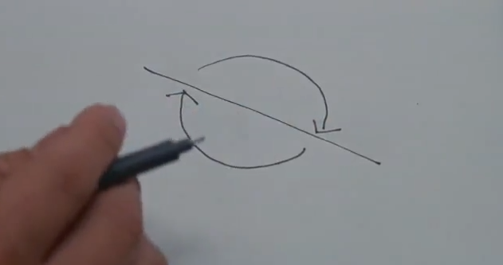

ü߆ False Awakening
"False Awakening is an immersive and interactive art installation, which recreates Andrew’s (my artist partner) surrealistic and symbolic lucid dreaming experience, harnessing Virtual Reality (VR) and Electroencephalography (EEG Brainwave) technology."
The Inspiration
What if, you can Lucid Dream in Virtual Reality, creating and perceiving your world simultaneously?
Being technically and experimentally driven, I set out pursuing an interface beyond stereotypical interfaces between a human and a computer, unlike a Kinect or a LeapMotion. The idea of mind-control struck me in the middle of one night when I was about to fall asleep. I started to make mind-controlling and dreaming the theme of my thesis. Such theme pointed me to the technology, science and artistic reference that I needed naturally. I pieced it together as I went along. Greatfully, I met Andrew who is interested in re-creating lucid dreaming experience. Eventually we decided to harness VR and EEG technology to create a lucid dreaming experience which is inspired by Inception the movie, backed by legitimate neurology and psychology.
The Project
The audiences will be invited to put on the “Dream Machine”, then sit on a rocking chair placed in the decorated room. The audiences experience lucid dreaming by actively manipulating the dream with their own brain power, immersively witnessing the wonder in the exquisite world in 3D, and interacting with dream world objects with physical gestures at firsthand.
It strives for preserving and expressing precious memories, wild imagination, perspectives and personalities, inspiring others to break through the boundary of logic and reason shaped by the refrained modern society, explore the possibilities of embracing the emotional, intuitive, creative thinking, and express their ideas without constraints.
The Components

Dream Machine
A HMD (head mounted device), incorporated an Oculus Rift virtual reality headset and a NeuroSky MindWave brainwave-sensing headset, encapsulated with a generic helmet. VR is the sole device that provides visual. Meanwhile, both EEG and VR serves the purpose of recreating the dream with intriguing interactivity.
Installation Location Setup
An imaginative resemblance of Andrew’s bedroom in his childhood, where a rocking chair is placed in the middle of the room and decorated with concept arts, photos and objects related to Andrew’s fantasy. The ordinary, yet poor and crude looking room draws a drastic contrast against the fantasy that lives in the dream.

Dream in VR Space
The content of the dream world, which is created based on Andrew’s dream, imagination, and the mergence of his unconscious thoughts and conscious ideas, involves three themes: memories, fantasy and sex. It is also greatly influenced by theories of dreams proposed by Sigmund Freud, Surrealism and Symbolism.
Oneirology (Study of Dream)
Sigmund Freud
The Unconscious
The unconscious, aka “Libodo”, is repressed by socialisation, and It only appears in sleeping, which implies contents in dreams is a result of unconsciousness.
During Rapid Eye Movement sleep, brain’s motor cortex remains active and brainwave looks very similar to that of awake, justifying that dreams feels real. In dreams, our mind continuously create and perceive simultaneously. A new “interpretation” is consciously created, and we experience the result of that “new interpretation”, forming a reciprocal causation. This delays wake, acting as the guardian of sleep. However the main function for dreams is to fulfil the repressed wishs which are difficult to be realised in reality.
The Dream Works
When producing a dream, the unconscious tends to multiple elements into a sole element. Abstract feelings and ideas in the dreams get visualized with materials from what we see in day time and major childhood memories. Such a process is “Condensation”, and it further inspires Surrealism artists.
Carl Jung

Active Imagination
Jung found that, if a person cannot explain or even recall his/her own dream, he/she could try to stop thinking in language and rationality, instead to create an unconfined world with imagination. This would help bringing the unconscious contents up to the conscious. Hence, imagining actively in day time is dreaming with eyes open, while dreaming at night is imagining actively with eyes close.
The Implementation
EEG Brainwave Control
Users concentrate to clear your vision, clear mind to stops stars from glittering. Such feature enable users to actively creating the dream and experience simultaneously.Data processing
Exponential smoothing algorithm is employed to process noisy brainwave data. TCP/IP socket connection set up for bluetooth signal passing and parsing from EEG headset to the computer.Custome Shader for the Sky
Responive shader than changes its number and intensity of stars, follow the change in EEG data.A* Pathfinding
Pedestrians in the dream are all driven by AI agents following A* search algorithm, leveraging its completeness, optimality, and optimal efficiency.
Kuwahara filter
The non-linear smoothing filter that effectively reduce noise but also blur out the edges. Meanwhile perfect for transforming images and objects from photerealistic to surrealistic and oilpaint alike.
Finite State Machine
Perfect AI application for chickens in the field that switches their between different behavior, from time to time by chance, and stay at only one state at a time.
Pac-Man
Studied and replicated one of the most successful classic arcade game, for the purpose for resembling Andrew's childhood.
Break the Mirror
Re-creating realistic physical interaction with real physics. Which also symbolizes destroying obstables that seemed indestructible is possible.
EEG Terrain
Get through the fluctuating terrain, simply by staying calm to soothe the ups and downs.
Technical Experiment
How feastures are made possible in Unity3D
Future application & enhancement
As Freud's research reveals that, a lot of soldiers who fought in the World War I tend to dream of their miserable experiences during the war very often. They forced themselves to return to the trauma. Although it is excruciating, it means there's an opportunity to change, or even rewrite what seems to be irreversible.
With False Awakening and other novel technologies, like fMRI and machine learning, it is possible to systemetically recreate traumatic scences and analyze dreamer's sleeping data scientifically, which is very likely and plausible to cleanse traumatic memorise, and eventually cure Posttraumatic stress disorder (PTSD) fundemantally via confronting traumatic situation again in a controlled environment.
My Contribution
- Tech Lead
- Programming in Unity C#, Oculus VR
- Hardware Coding for Mindwave Mobile
- Dream Machine Design
- Ideation
- Scientific Research
- Video & VFX Production
Project Documents
Check out the slides and thesis report for more comprehensive information, including inspiration, process, etc.